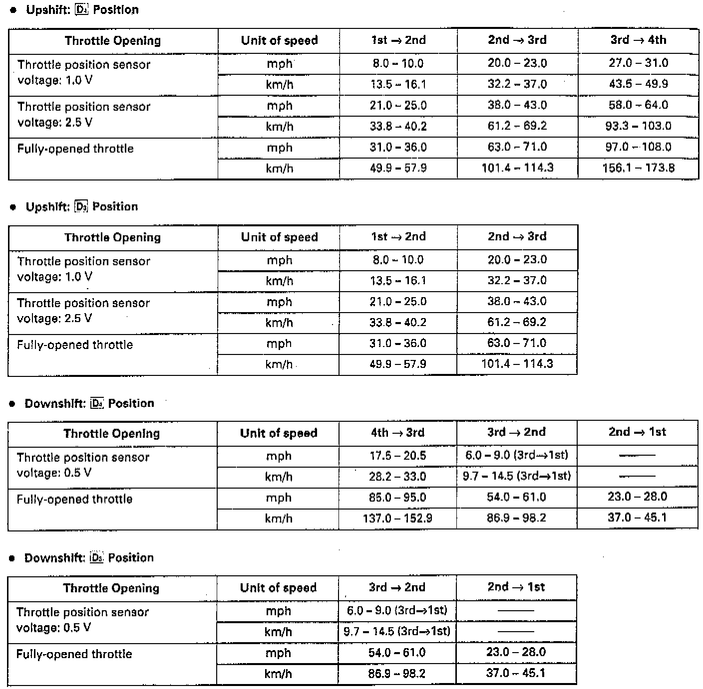
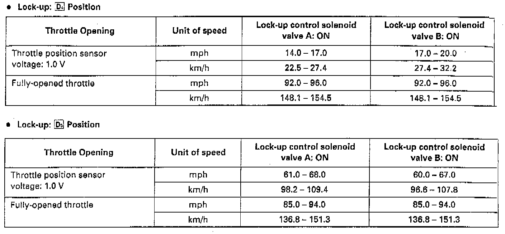
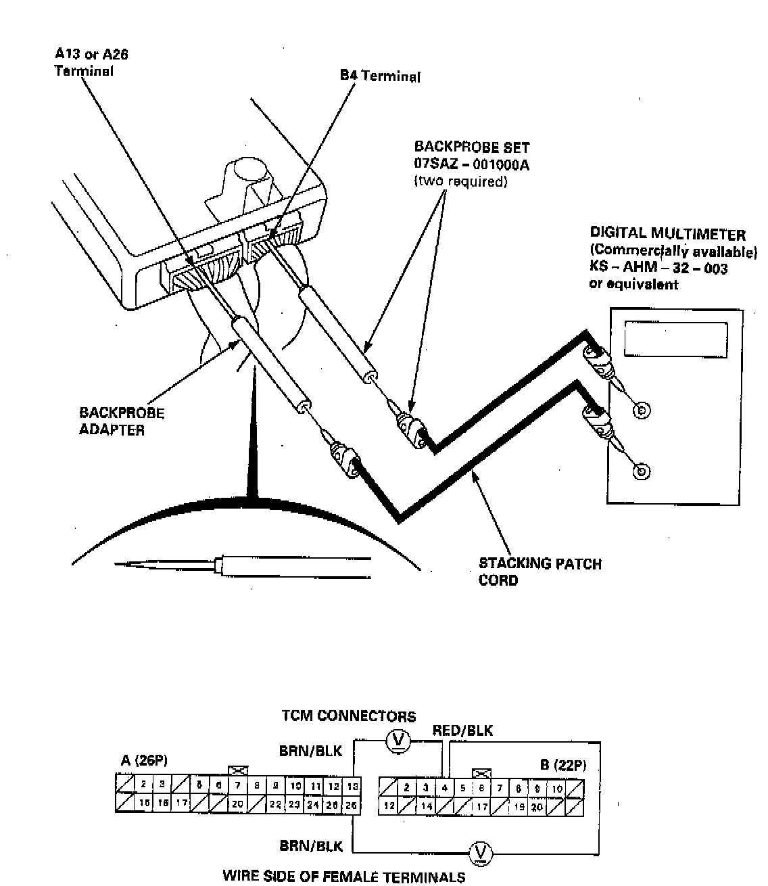

Road Test
NOTE: Warm up the engine to operating temperature (the radiator fan comes on).1. Apply parking brake and block the wheels. Start the engine, then shift to D4 position while depressing the brake pedal. Depress the accelerator pedal, and release it suddenly. The engine should not stall.
2. Repeat same test in D3 position.


3. Test drive the car on a flat road in the D4 position. Check that the shift points occur at approximate speeds shown. Also check for abnormal noise and clutch slippage.
NOTE: Throttle position sensor voltage represents the throttle opening.
a. Remove the TCM.

b. Set the digital multimeter to check voltage between B4 (+) terminal and A13 or A26 (-) terminal for the throttle position sensor.
4. Accelerate to about 35 mph (57 km/h) so the transmission is in 4th, then shift from D4 position to 2 position. The car should immediately begin slowing down from engine braking.
CAUTION: Do not shift from D4 or D3 position to 2 or 1 position at speeds over 100 mph (160 km/h); you may damage the transmission.
5. Check for abnormal noise and clutch slippage in the following positions.
- 1 (1st Gear) Position:
a. Accelerate from a stop at full throttle. Check that there is no abnormal noise or clutch slippage.
b. Upshifts should not occur with the shift lever in this position.
- 2 (2nd Gear) Position:
a. Accelerate from a stop at full throttle. Check that there is no abnormal noise or clutch slippage.
b. Upshifts and downshifts should not occur with the shift lever in this position.
- R (Reverse) Position:
Accelerate from a stop at full throttle, and check for abnormal noise and clutch slippage.
6. Test in 1 (Parking) Position: Park car on slope (approx. 16°), apply the parking brake, and shift into position. Release the brake; the car should not move.